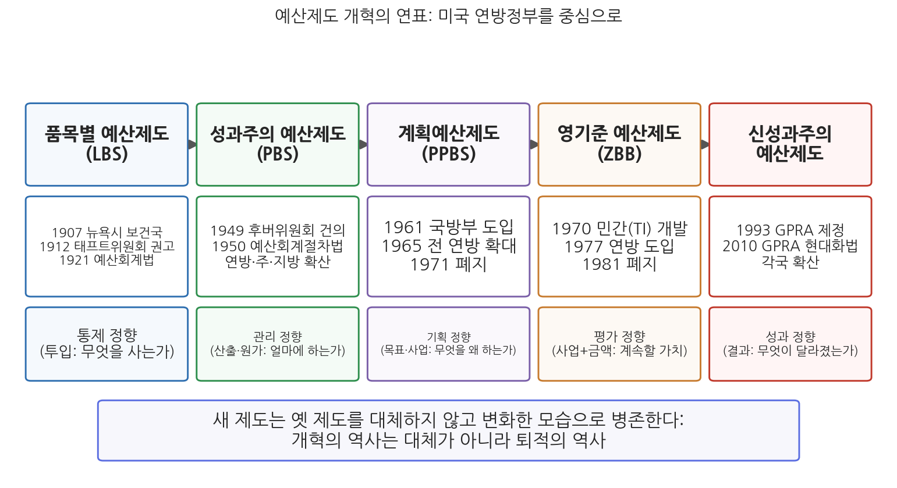
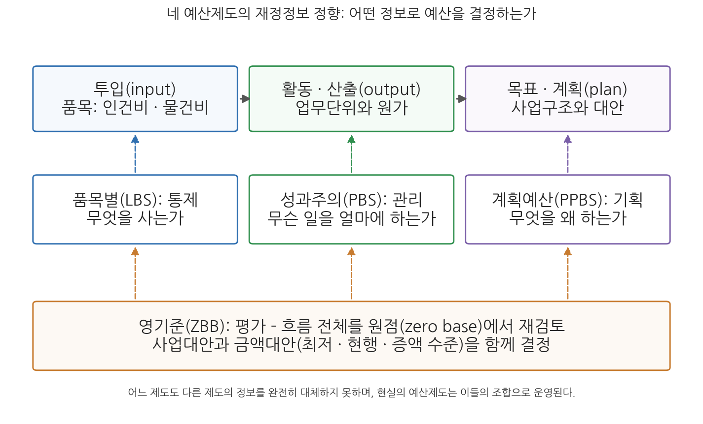

13주차 1차시. 재정개혁론: 예산제도 개혁의 역사
최종 수정: 2026-08-13 · 이 교재는 학기 중에도 계속 업데이트됩니다
예산은 언제나 자금의 지출을 계획된 목표의 달성과 체계적으로 연결시키는 과정으로 인식되어 왔다. (앨런 쉬크, 「PPB로 가는 길: 예산개혁의 단계들」, 1966)
이 장에서 배우는 것
1965년 8월, 미국의 존슨(Lyndon B. Johnson) 대통령은 국방부에서 성과를 거두고 있던 새로운 예산제도, 곧 계획예산제도(PPBS)를 모든 연방부처에 전면 도입하라고 지시했다. 목표를 정의하고, 대안을 분석하고, 여러 해에 걸친 사업계획에 따라 예산을 짜는 이 제도는 "현대적 관리의 정점"이라는 찬사 속에 출발했다. 그러나 6년 뒤인 1971년, 닉슨 행정부는 이 제도를 공식적으로 폐지했다. 이야기는 여기서 끝나지 않는다. 1977년 카터(Jimmy Carter) 대통령은 조지아 주지사 시절 자신이 도입했던 영기준 예산제도(ZBB)를 연방정부 전체로 확대했지만, 이 제도 역시 1981년 레이건 행정부에서 폐지되었다. 반세기 동안 미국 연방정부는 예산제도를 네 차례 갈아엎었고, 그중 둘은 대통령의 야심작이었음에도 10년을 넘기지 못했다.
그렇다면 실패한 제도의 역사를 왜 배우는가. 두 가지 이유가 있다. 첫째, 실패한 제도는 사라진 것이 아니라 오늘의 제도 안에 켜켜이 쌓여 있기 때문이다. 5주차에서 본 한국의 프로그램 예산제도는 PPBS의 사업구조 개념을, 14주차에서 볼 재정성과관리는 성과주의 예산의 문제의식을 물려받았다. 둘째, 예산제도 개혁의 성쇠는 12주차에서 본 예산이론의 대립, 곧 총체주의와 점증주의의 대결이 현실 제도에서 어떻게 판가름 났는지를 보여 주는 실험 기록이기 때문이다. 지금까지의 예산개혁 노력은 대부분 총체주의를 제도화하려는 시도였고, 그 시도가 부딪힌 벽이 무엇이었는지가 이 장의 핵심 질문이다. 구체적으로 다음을 배운다.
- 쉬크의 통제·관리·기획 정향으로 예산제도 개혁사를 읽는 틀
- 품목별 예산제도(LBS)의 논리와 재정 민주주의적 기원
- 성과주의 예산제도(PBS)의 업무단위·단위원가 계산 방식
- 계획예산제도(PPBS)의 구조와 흥망, 영기준 예산제도(ZBB)의 의사결정 패키지
- 미국 개혁사의 유산이 한국의 프로그램 예산제도와 재정성과관리로 이어지는 경로
이 장은 하나의 질문을 따라 전개된다. "정부는 왜 예산제도를 거듭 뜯어고쳤고, 각 제도는 무엇을 얻고 무엇에 걸려 넘어졌는가?"
1.1 개혁사를 읽는 틀(재정정보의 정향)을 세운다 → 1.2 통제를 위한 품목별 예산제도(LBS)를 본다 → 1.3 관리를 위한 성과주의 예산제도(PBS)를 본다 → 1.4 기획을 위한 계획예산제도(PPBS)의 구조와 실패를 뜯어본다 → 1.5 평가를 겨눈 영기준 예산제도(ZBB)를 보고 네 제도를 비교한다 → 1.6 개혁의 유산이 신성과주의와 한국의 재정개혁으로 이어진 경로를 확인한다.
1.1 예산제도 개혁의 변천과 재정정보의 정향
재무행정에서 예산개혁 논의는 미국 연방정부 예산제도 개혁의 변천을 중심으로 이루어져 왔다. 미국의 경험이 이론의 발전뿐만 아니라 개혁의 성공과 실패에 관해서도 가장 풍부한 시사점을 제공해 왔기 때문이다. 미국의 예산제도는 품목별 예산제도, 성과주의 예산제도, 계획예산제도, 영기준 예산제도의 순서로 도입되었다. 이러한 개혁의 흐름에는 두 개의 동기가 겹쳐 있다. 하나는 한정된 재원을 더 합리적으로 배분하려는 경제적 합리성의 추구이고, 다른 하나는 예산을 둘러싼 의사결정 구조 자체를 바꾸려는 정치적 합리성의 추구다. 새 제도가 도입될 때마다 예산을 결정하는 권한의 소재가 의회에서 행정부로, 중앙에서 부처로, 다시 최고관리층으로 이동했다는 점을 눈여겨보아야 한다.
개혁사를 읽는 고전적인 틀은 쉬크(Allen Schick)가 1966년에 제시했다. 쉬크에 따르면 모든 예산체계는 통제(control), 관리(management), 기획(planning)의 세 기능을 함께 수행하되, 시대마다 어느 기능을 앞세우는가의 정향(orientation)이 달랐다. 품목별 예산제도는 지출이 승인된 대로 이루어졌는지를 따지는 통제 정향, 성과주의 예산제도는 일이 능률적으로 수행되는지를 따지는 관리 정향, 계획예산제도는 정부의 목표와 사업이 무엇이어야 하는지를 따지는 기획 정향의 산물이다. 여기에 영기준 예산제도는 기존 사업을 계속할 가치가 있는지 되묻는 평가(evaluation) 기능을 앞세운 제도로 이해할 수 있다(Chandler & Plano, 1982).
정향이 달라지면 예산이 요구하는 정보도 달라진다. 예산제도는 목표, 활동, 자원, 조직단위, 산출, 사회적 영향 등 다양한 재정정보를 필요로 하는데, 각 예산제도는 서로 다른 유형의 정보 형태를 취한다(Lyden & Miller, 1978). 품목별 예산제도의 예산서에는 어떤 투입요소를 얼마나 사느냐가, 성과주의 예산제도에는 무슨 활동을 얼마의 원가로 얼마나 하느냐가, 계획예산제도에는 어떤 목표를 위해 어떤 사업을 몇 년에 걸쳐 하느냐가 담긴다. 요컨대 예산제도 개혁의 역사는 예산서에 담기는 정보의 역사이기도 하다.
재정정보의 정향(orientation)이란 예산제도가 어떤 유형의 정보를 중심으로 예산을 편성·심의하도록 설계되어 있는가를 뜻한다. 쉬크(Schick, 1966)는 예산의 기능을 통제(승인된 대로 쓰였는가), 관리(능률적으로 수행되는가), 기획(목표와 사업이 타당한가)으로 구분하고, 예산개혁의 역사를 통제에서 관리로, 관리에서 기획으로 정향이 이동해 온 과정으로 읽었다. 라이든과 밀러(Lyden & Miller, 1978)는 같은 관점에서 각 예산제도가 요구하는 재정정보(투입, 활동, 산출, 목표, 사회적 영향)의 차이에 주목했다.
이 틀을 연표 위에 올려놓으면 그림 13-1이 된다.

그림 13-1을 읽는 법은 이렇다. 가로축은 시간이고, 축 위의 상자들이 미국 연방정부에 도입된 예산제도들이며, 각 상자 아래에 그 제도의 정향이 적혀 있다. 이 그림에서 알 수 있는 것은 두 가지다. 첫째, 개혁의 정향이 통제에서 관리로, 기획으로, 평가로, 다시 결과 중심의 성과로 이동해 왔다. 둘째, 뒤의 제도가 앞의 제도를 지운 것이 아니다. 품목별 예산제도는 1920년대에 자리 잡은 이래 오늘날까지 미국에서도 한국에서도 일부 존속하고 있으며, 새로운 제도가 도입되더라도 기존 제도는 변화한 모습으로 병존하는 것이 일반적이다. 현재 우리 예산제도 역시 품목별, 성과주의, 계획예산제도의 요소를 모두 포함하고 있다. 개혁의 역사는 대체의 역사가 아니라 퇴적의 역사인 셈이다.
1.2 품목별 예산제도(LBS): 통제를 위한 예산
품목별 예산제도(Line-item Budgeting System, LBS)는 예산을 지출 대상, 곧 품목별로 분류해 편성하는 예산제도다. 지출 대상(품목)이란 예산과목의 최종 단위인 '목'에 해당하는 것으로, 인건비, 물건비 등의 투입요소를 지칭한다. 품목별 예산서는 "공무원 급여에 얼마, 사무용품 구입에 얼마, 여비에 얼마"라는 식으로 정부가 무엇을 사는 데 돈을 쓰는지를 보여 준다. 예산액을 지출 대상별로 한계를 명확히 정해 배정하면 관료는 승인된 품목과 금액의 울타리를 벗어날 수 없다. 품목별 예산제도가 관료의 권한과 재량을 제한하는 통제 지향적 예산제도이자, 입법부의 재정통제를 통한 재정 민주주의 실현의 수단으로 등장한 이유가 여기에 있다.
기원은 20세기 초 미국의 도시 개혁운동으로 거슬러 올라간다. 1906년 설립된 뉴욕시정연구원(New York Bureau of Municipal Research)은 예산 낭비와 부패를 방지하고 예산 통제를 확보하는 방안으로 품목별 예산제도의 도입을 건의했고, 1907년 뉴욕시 보건국 예산편성에 처음 적용되었다. 연방 차원에서는 1910년 태프트(William H. Taft) 대통령이 설치한 '절약과 능률에 관한 대통령위원회', 이른바 태프트위원회가 1912년 보고서 「국가예산의 필요성(The Need for a National Budget)」을 통해 행정부가 편성하는 통일된 국가예산과 품목별 통제를 권고했다. 이 권고는 1921년 예산회계법(Budget and Accounting Act)으로 결실을 맺는다. 이 법으로 대통령이 연방정부 전체의 예산안을 편성해 의회에 제출하는 오늘날의 예산과정이 확립되었고, 재무부 안에 예산국(Bureau of the Budget)이, 의회 쪽에 회계검사원(GAO)이 설치되었으며, 1920년대에 대부분의 연방부처가 품목별 예산제도를 도입하였다. 예산국은 1970년 지금의 관리예산처(OMB)로 개편되어 오늘에 이른다.
품목별 통제가 재정 민주주의의 수단이라는 말은 한국 헌법에서도 확인할 수 있다.
"① 국회는 국가의 예산안을 심의·확정한다.
② 정부는 회계연도마다 예산안을 편성하여 회계연도 개시 90일 전까지 국회에 제출하고, 국회는 회계연도 개시 30일 전까지 이를 의결하여야 한다."
무슨 뜻인가. 정부는 돈을 쓰기 전에 국민의 대표기관인 국회의 승인을 받아야 하며(2주차에서 본 사전의결의 원칙), 국회가 승인한 범위가 곧 정부 지출의 한계가 된다. 그런데 국회가 "정부에 얼마"라고 총액만 승인한다면 통제는 껍데기가 된다. 승인이 실질적 통제가 되려면 예산이 무엇에 얼마를 쓰는지 알아볼 수 있는 단위로 쪼개져 있어야 하고, 그 쪼개진 단위가 바로 품목이다. 품목별 분류는 헌법이 정한 국회 예산심의권을 작동하게 하는 기술적 토대인 셈이다.
한국의 예산과목 체계에도 품목별 예산제도의 뼈대가 남아 있다. 5주차에서 본 장-관-항-세항-목의 과목체계에서 목이 품목별 예산제도의 기본 단위다.
"③ 세입예산은 제2항의 규정에 따른 구분에 따라 그 내용을 성질별로 관·항으로 구분하고, 세출예산은 제2항의 규정에 따른 구분에 따라 그 내용을 기능별·성질별 또는 기관별로 장·관·항으로 구분한다."
무슨 뜻인가. 법률이 정하는 예산의 구분은 장-관-항까지이고, 같은 조 제4항은 그 아래 세항과 각 경비의 성질에 따른 목의 구분을 중앙예산기관의 장(현재의 기획예산처장관)이 정하도록 위임하고 있다. 목은 인건비, 물건비처럼 어떠한 투입요소가 어느 정도 투입되는지를 보여 주는 단위이며, 프로그램 예산제도 아래에서는 편성 비목이 이 목에 해당한다. 국회 심의와 감사의 마지막 단위가 여전히 투입요소라는 점에서, 한국 예산의 바닥에는 품목별 예산제도가 깔려 있다.
품목별 예산제도의 장점은 통제의 논리에서 나온다. 정부의 지출 대상과 금액이 명확하게 표현되므로 관료 재량의 여지가 적고 예산의 남용을 방지할 수 있으며, 회계책임을 묻기 쉽다. 의회의 예산심의도 용이한 편이고, 예산 삭감 시 이익집단의 저항도 적으며, 급여 지급과 재화·서비스 구매의 관리에 효과적이고, 전년도 품목별 내역이 남아 있어 다음 해 예산 편성에도 유용하다. 단점 역시 같은 논리의 뒷면이다. 품목별 예산서만으로는 정부가 이것을 왜 구매하는지, 어떠한 사업을 추진하는지 파악할 수 없으며, 지출에 따른 성과나 효과에는 관심을 두지 않는다. 품목의 울타리가 촘촘할수록 예산집행의 신축성은 낮아지고, 부처는 사업의 우선순위보다 예산 항목의 확보에만 관심을 갖게 될 가능성이 있다. 이 한계에 대한 응답으로 등장한 것이 성과주의 예산제도다.
1.3 성과주의 예산제도(PBS): 관리를 위한 예산
성과주의 예산제도(Performance Budgeting System, PBS)는 예산을 사업별·활동별로 분류해 편성하되, 업무 단위의 원가와 양을 계산하여 편성하는 제도다. 품목별 예산제도가 "무엇을 사는가"를 보여 준다면, 성과주의 예산제도는 "무슨 일을 얼마의 비용으로 얼마나 하는가"를 보여 준다. 기원은 1913년 뉴욕시 리치먼드구가 시행한 원가예산제에서 찾을 수 있다. 업무를 기능별로 분류하고 업무의 원가를 계산해 예산에 적용한 것이다. 연방정부 차원의 전환점은 제2차 세계대전 후에 왔다. 행정부 조직 전반을 재검토한 제1차 후버위원회(1947-1949)는 1949년 보고서에서 "모든 예산 개념이 기능, 활동, 사업에 근거를 둔 예산의 채택에 의해 재정립되어야 한다"며 성과예산(performance budget)의 채택을 건의했고, 이 건의는 1950년 예산회계절차법(Budget and Accounting Procedures Act)으로 입법화되어 연방정부 전체로, 나아가 주정부와 지방정부로 확산되었다.
성과주의 예산의 핵심은 업무단위(work unit)를 개발하고 단위원가를 계산하는 것이다. 성과주의 예산은 "단위당 X원의 원가로 수행되는 Y개의 업무단위"로 표현되며, 예산액은 다음의 산식으로 도출된다.
예산액 = 단위원가 × 업무량
예를 들어 도로 1km를 포장하는 단위원가가 5,000만 원이고 내년에 100km를 포장할 계획이라면, 도로포장사업의 예산은 50억 원으로 편성된다. 여기서 업무단위는 하나의 사업을 수행하는 과정의 활동 또는 최종 산물로 정의되며, 사업과 지출 대상의 중간에 위치하는 단위다. 고속도로 건설사업이라면 건설된 도로 1km(최종 산물)가, 경찰의 순찰활동이라면 순찰 1회(활동)가 업무단위가 된다. 업무단위는 가능한 한 계량화되고 표준화되어야 하며, 그 선정 기준으로는 동질성(같은 단위끼리는 성질이 같을 것), 계산가능성(완결된 업무로서 셀 수 있을 것), 영속성(해마다 계속 쓸 수 있을 것), 단수성(한 사업에 하나의 단위), 이해용이성이 제시된다.
단위원가와 업무량의 계산은 관리 개선의 지렛대가 된다. 단위원가를 정확히 계산하면 예산 낭비의 요소를 드러내 능률을 높일 수 있고, 예산집행 결과 실제로 산출된 업무량은 사업의 목표 달성 여부를 판단하는 측정지표가 된다. 이처럼 관리상의 정보가 예산에 표시되기 때문에, 성과주의 예산제도는 쉬크의 정향 구분에서 관리 지향의 제도로 분류된다.
장점은 셋으로 요약된다. 첫째, 업무단위의 선정과 단위원가의 과학적 계산을 통해 합리적이고 효율적인 자원배분에 다가갈 수 있다. 둘째, 계량화된 정보가 합리적 의사결정과 관리 개선을 돕는다. 셋째, 사업·활동별로 예산이 편성되므로 정부가 무슨 사업을 추진하는지 국민이 쉽게 이해할 수 있다. 단점도 뚜렷하다. 첫째, 업무단위의 선정이 곤란하다. 업무단위 개발은 이 제도의 가장 핵심적인 작업이지만, 앞의 다섯 기준을 충족하는 단위를 찾는 일은 쉽지 않다. 외교 교섭이나 정책 기획처럼 셀 수 없는 업무는 어떻게 할 것인가. 둘째, 단위원가의 계산이 어렵다. 인건비와 간접비를 사업별로 배분하는 원가회계는 당시 정부 회계의 역량을 넘어서는 일이었다. 셋째, 업무단위가 실질적으로는 중간 산출물인 경우가 대부분이어서 성과의 질적인 측면을 파악하는 데 한계가 있다. 순찰 횟수가 늘어난다고 치안이 좋아진다는 보장은 없기 때문이다.
1950년대의 성과주의 예산제도(PBS)와 1990년대 이후의 신성과주의 예산제도(new performance budgeting)는 이름이 비슷해 혼동하기 쉽다. 그러나 PBS의 초점은 산출(output)과 능률이다. 순찰을 몇 회 했고 단위원가가 얼마인지를 묻는다. 반면 신성과주의의 초점은 결과(outcome)다. 순찰 횟수가 아니라 범죄율이 실제로 낮아졌는지를 묻고, 관리자에게 재량을 주는 대신 결과에 책임을 지운다. 미국의 정부성과결과법(GPRA, 1993)과 한국의 재정성과관리제도(14주차)는 신성과주의 계열이다. 시험에서 두 제도의 초점(산출 대 결과)을 구분해 서술할 수 있어야 한다.
1.4 계획예산제도(PPBS): 기획을 위한 예산
계획예산제도(Planning Programming Budgeting System, PPBS)는 장기적인 기획과 단기적인 예산편성을 유기적으로 연결시킴으로써 합리적인 자원배분을 이루려는 제도다. 이름의 세 단어가 제도의 구조를 그대로 보여 준다. 기획(planning)으로 목표를 분명히 정의하고, 프로그래밍(programming)으로 목표 달성의 대안들을 검토해 다년간의 사업재정계획을 수립하며, 그 계획에 따라 예산(budgeting)을 편성한다. 핵심은 투입요소 대신 정부의 목적, 최종 산물, 사업과 같은 산출 영역에 관심을 집중해 예산상의 결정이 이루어져야 한다는 것, 그리고 기획·사업분석·예산의 세 기능을 단일한 의사결정으로 통합한다는 것이다. 금액에 대한 결정보다 사업에 대한 결정에 초점을 맞춘다는 점에서, PPBS는 12주차에서 본 총체주의, 곧 합리적 선택모형에 입각한 예산결정을 가장 야심 차게 제도화한 시도였다.
연혁은 국방에서 시작한다. 1950년대 미국 랜드연구소(RAND Corporation)는 국방 자원배분을 위해 사업예산(program budget) 개념을 개발했고, 1961년 케네디 행정부의 국방장관으로 취임한 맥나마라(Robert McNamara)가 이를 국방부에 도입했다. 핵무기, 재래식 전력, 수송 능력을 군별 예산이 아니라 임무별 사업으로 묶어 비교한 국방부의 실험은 성공적이라는 평가를 받았고, 존슨 대통령은 1965년 8월 이 제도를 모든 연방부처에 전면 도입하도록 지시했다. 그러나 국방부 밖에서 PPBS는 뿌리내리지 못했고, 1971년 닉슨 행정부에서 공식적으로 폐지되었다. 다만 미국 국방부는 이후에도 이 제도를 내부관리 제도로 발전시켜 오늘날까지 활용하고 있으며, 한국 국방부도 1979년부터 국방기획관리제도를 운용해 왔고 1983년 예산개혁을 통해 자원배분과 관리기능을 포괄하는 종합적인 자원관리 체계로 제도화한 바 있다.
구조적 측면에서 PPBS의 가장 핵심적인 작업은 사업구조(program structure)를 만드는 것이다. 사업구조는 각 조직의 소관 사업을 목표-수단의 관계에 따라 계층화한 것으로, 사업범주(대분류), 하위사업(중분류), 사업요소(소분류)의 3단계로 구성하는 것이 일반적이다. 사업범주는 최고관리층의 의사결정에 도움이 되도록 사업의 집합체를 최상위 수준에서 분류한 사업군이고, 사업요소는 명확히 정의되고 수량화될 수 있는 최종 산출물을 내는 조직체의 활동으로서 사업구조의 기본 단위다. 사업구조가 곧 예산과목 구조는 아니라는 점에 유의해야 한다. 사업구조는 대안 검토를 반영해 놓은 일종의 사업요강이며, 최종적인 사업재정계획으로 이어지려면 예산과의 별도 연계작업이 필요하다. 사업재정계획은 수년간의 자금계획과 산출계획으로 구성되며, 해마다 한 해씩 미래로 밀어 가며 갱신하는 연동식 계획(rolling plan)의 형태를 취한다.
분석적 측면에서 PPBS는 사업계획을 마련할 때 여러 대안을 체계적으로 분석·검토하는 프로그래밍 단계를 거치며, 이때 체제분석과 비용편익분석이 사용된다. 체제분석은 복잡한 문제를 정의하고, 대안을 개발하며, 각 대안의 비용과 효과를 추정·비교해 의사결정자의 선택을 돕는 접근법으로, 그 중심에 대안의 비용과 효과를 비교하는 분석이 있다. 이 분석 도구는 다음 차시(13주차 2차시)에서 본격적으로 다룬다. 정보시스템 측면에서 PPBS는 사업구조를 담은 사업요강, 연동형 수입·지출 계획인 사업재정계획, 주요 결정사항의 분석자료인 특수분석연구의 세 가지 문서를 생성해 예산당국에 제출하도록 설계되었다. 부처와 예산국에 사업대안 결정에 필요한 정보를 공급하는 문서 체계인 셈이다.
PPBS의 장점은 명확하다. 목표, 사업, 대안, 비용, 효과를 분석기법과 장기적 시계 속에서 고려하므로 자원배분의 합리화에 기여하고, 기획·사업분석·예산편성이 최고관리층에 집중된 단일한 의사결정으로 통합되므로 의사결정의 일원화를 이룬다. 그러나 바로 그 장점이 단점의 원천이 되었다. 과도한 중앙집권화의 부작용, 사업구조 작성의 어려움, 계량화의 어려움, 간접비 배분의 문제, 사업구조와 예산과목 구조의 불일치, 과다한 문서와 정보량, 공무원과 의회의 이해 부족이 겹치면서 제도는 6년 만에 좌초했다.
표면적 사인은 서류의 홍수였다. 부처들은 익숙하지 않은 사업구조와 분석 문서를 만드느라 소진되었고, 정작 예산 결정은 종전 방식대로 이루어지는 형식주의가 만연했다. 그러나 더 깊은 사인은 정치였다. 점증주의 이론가 윌다브스키(Wildavsky, 1969)는 PPBS가 예산의 정치적 본질을 무시한 설계였다고 진단했다. 첫째, 분석 역량의 한계다. 모든 사업의 목표를 정의하고 대안을 비교하는 일은 12주차에서 본 총체주의의 가정(완전한 정보, 명확한 목표, 알려진 사회후생함수)을 그대로 요구하는데, 현실의 어느 정부도 그 가정을 충족하지 못한다. 둘째, 권력 구조와의 충돌이다. 사업 중심의 예산은 품목과 기관 중심으로 짜인 의회 상임위원회·세출위원회의 관할 구조와 맞지 않았고, 의회는 자신의 통제 수단을 해체하는 제도에 협력할 이유가 없었다. 셋째, 중앙집권화에 대한 부처의 저항이다. 결정권이 최고관리층과 분석가에게 집중될수록 일선 부처의 이탈 유인은 커졌다. 요컨대 PPBS의 실패는 계산의 실패라기보다 정치적 합리성을 설계에 넣지 못한 실패였다.
1.5 영기준 예산제도(ZBB): 원점에서 다시 묻는 예산
영기준 예산제도(Zero Base Budgeting, ZBB)는 과거의 관행을 전혀 참고하지 않고 목적, 방법, 자원에 대한 근본적인 재평가를 바탕으로 예산을 편성하는 제도다. 점증주의 예산결정에서 전년도 예산은 당연한 기득권, 곧 기저(base)로 인정되고 심의는 증가분에 집중된다. ZBB는 바로 이 기저를 부정한다. 모든 사업은 해마다 존재 이유부터 다시 입증해야 한다는 것이다. 다만 문자 그대로 모든 사업을 백지상태(scratch)에서 검토한다고 보는 것은 아니며, 선정된 사업계획에 대해 예산 기준 영역의 한 지점에서부터 검토하는 것을 포괄적으로 영기준 예산제도라고 부른다(Sarant, 1978). 기본 전제는 행정기관이 모든 사업계획에 대해 적어도 한 번은 광범위하게 검토해야 한다는 것이고, 이 점에서 ZBB는 쉬크의 예산 기능 연속선상에서 평가 기능을 강조한 제도로 분류된다(Chandler & Plano, 1982). PPBS가 사업에 대한 결정에 초점을 맞춘 제도라면, ZBB는 사업뿐만 아니라 금액에 대한 결정에도 초점을 둔다. 예산정보에 사업대안에 대한 결정뿐 아니라 금액대안에 대한 결정 내용까지 포함된다는 점이 다른 제도와의 가장 큰 차이다.
ZBB는 정부가 아니라 민간기업에서 태어났다. 텍사스인스트루먼츠사의 관리자였던 피어(Peter Pyhrr)가 개발해 1970년 하버드 비즈니스 리뷰에 소개한 이 기법을, 당시 조지아 주지사였던 카터가 1970년대 초 주정부 예산편성에 도입했고, 대통령이 된 뒤 1977년 연방정부 전체로 확대했다. 그러나 ZBB 역시 1981년 레이건 행정부에서 공식적으로 폐지되었다.
작동 방식은 세 단계로 이루어진다. 첫째, 의사결정 단위(decision unit)의 확인이다. 의사결정 단위는 조직의 관리자가 독자적인 업무수행의 범위와 예산편성의 결정권을 갖는 사업단위 또는 조직단위를 지칭한다. 사업 단위뿐만 아니라 조직 단위도 의사결정 단위가 될 수 있다는 점에서 ZBB는 PPBS보다 융통성이 있다. 둘째, 의사결정 패키지(decision package)의 작성이다. 의사결정 패키지는 의사결정 단위에 대한 분석·평가 결과를 명시해 놓은 표로, 목적, 사업 내용, 비용과 편익, 업무량과 성과측정, 목표달성을 위한 대안, 투입의 수준에 관한 정보가 담긴다. 이 가운데 앞의 다섯 가지는 사업대안에 대한 정보이고, 마지막 투입 수준이 금액대안에 대한 정보다. 사업대안 패키지가 상호 배타적인 대안들(같은 재원을 A사업에 쓸 것인가 B사업에 쓸 것인가)을 비교해 최선의 대안을 선택한 결과라면, 증액대안 패키지는 선정된 사업대안의 투입수준별 대안을 검토한 정보로서 투입을 변화시켜 가며 한계효과를 검토하는 장치다. 증액대안은 대개 2-5개, 일반적으로 세 수준으로 구분된다. 최저수준은 이보다 더 축소하면 사업 수행 자체가 무의미해지는 수준이고, 현행수준과 증액수준은 최저수준과의 차액으로 표시된다(예: 최저 30억 원, 현행 +1억 원, 증액 +1억 원).
셋째, 우선순위의 결정이다. 의사결정 단위별로 패키지가 개발되면 상급 관리자가 단위별 패키지를 통합해 순위를 매기고, 가용 재원이 허락하는 순위까지 예산을 배정한다. 여기서 우선순위 결정의 대상은 사업대안이 아니라 증액대안 패키지라는 점이 중요하다. "A사업이 B사업보다 중요한가"가 아니라 "A사업의 증액분이 B사업의 최저수준보다 급한가"를 묻는 한계적 분석의 형태를 취하기 때문이다. 예를 들어 어떤 부처가 예산 600억 원으로 A, B, C, D 네 사업을 수행하고 각 사업마다 최저·현행·증액의 세 수준이 개발되어 있다면, 순위를 매길 증액대안은 모두 12개가 되고, 재원은 이 12개 패키지의 순위표를 따라 위에서부터 배정된다. 우선순위 결정은 관리자가 얼마를 어디에 지출해야 하는가의 문제에 관심을 집중하게 함으로써 효율성을 높인다.
ZBB의 장점은 합리적 의사결정과 자원배분의 가능성, 의사결정 단위 설정의 다양성과 신축성, 그리고 일선 관리자가 패키지 작성에 참여하는 분권화된 관리체계에 있다. PPBS가 최고관리층으로 결정을 끌어올렸다면, ZBB는 패키지 작성을 통해 하위 관리자를 예산결정에 끌어들였다. 그러나 단점 역시 만만치 않았다. 해마다 모든 사업을 재검토하는 데는 과다한 노력과 시간, 분석이 필요했고, 방대한 의사결정 패키지의 우선순위를 정하는 작업은 어렵고 주관적이었다. 무엇보다 ZBB를 도입한 연방정부에서 예산 팽창 억제라는 목표에 크게 기여하지 못했다. 실제 운영에서 전년 예산의 대부분은 최저수준이라는 이름으로 사실상 승인되었기 때문에, "영기준이 아니라 90% 기준 예산"이라는 비판을 받았다.
이상의 네 제도를 비교하면 표 13-1과 같다.
표 13-1. 예산제도 개혁 4대 제도의 비교
| 구분 | 품목별(LBS) | 성과주의(PBS) | 계획예산(PPBS) | 영기준(ZBB) |
|---|---|---|---|---|
| 미국 도입 | 1920년대 (1921년 예산회계법) | 1950년 예산회계절차법 | 1965년 전 연방 확대, 1971년 폐지 | 1977년 도입, 1981년 폐지 |
| 정향 | 통제 | 관리 | 기획 | 평가 |
| 편성 기본단위 | 품목(목) | 업무단위 | 사업요소 | 의사결정 단위 |
| 핵심 정보 | 투입(무엇을 사는가) | 활동·산출과 원가(무슨 일을 얼마에 하는가) | 목표·사업·대안(무엇을 왜 하는가) | 사업대안 + 금액대안(계속할 가치가 있는가) |
| 결정의 초점 | 금액 | 금액·활동 | 사업 | 사업과 금액 |
| 주요 장점 | 회계책임·통제 용이 | 능률·관리정보 | 자원배분 합리화·장기 시계 | 기저의 재검토·참여 |
| 주요 한계 | 사업·성과 파악 불가 | 업무단위 선정·원가계산 곤란 | 중앙집권화·문서 과다·정치와 충돌 | 노력 과다·90% 기준 예산 |
표 13-1에서 알 수 있듯이, 개혁이 거듭될수록 예산이 담으려는 정보는 투입에서 산출로, 목표와 대안으로, 마침내 기존 사업의 존재 이유로까지 확장되었다. 그러나 정보 요구가 커질수록 제도의 운영 부담과 정치적 마찰도 함께 커졌고, 가장 야심적인 두 제도(PPBS, ZBB)가 가장 짧게 존속했다. 그림 13-2는 이 대비를 한눈에 보여 준다.

그림 13-2를 읽는 법은 이렇다. 위 줄은 재정 활동의 흐름(투입 → 활동·산출 → 목표·계획)이고, 아래 네 상자는 각 예산제도가 이 흐름의 어느 지점을 중심 정보로 삼는지를 보여 준다. 왼쪽에 있을수록 통제 지향, 오른쪽으로 갈수록 기획 지향이며, ZBB는 흐름 전체를 원점에서 재검토한다는 점에서 밑에서 전체를 받치는 모양으로 그렸다. 이 그림에서 알 수 있는 것은, 어느 제도도 다른 제도의 정보를 완전히 대체하지 못한다는 점이다. 통제를 위한 투입 정보, 관리를 위한 원가 정보, 기획을 위한 목표·대안 정보는 각각 다른 질문에 답하며, 현실의 예산제도는 이들의 조합으로 운영된다.
1.6 개혁이 남긴 것: 신성과주의와 한국의 재정개혁
PPBS와 ZBB의 실패 이후, 예산개혁은 방향을 틀었다. 1990년대 각국으로 확산된 신성과주의 예산제도는 앞선 제도들의 실패에서 배운 두 가지를 반영한다. 첫째, 중앙의 분석가가 모든 사업을 계산해 배분하는 방식 대신, 관리자에게 재량을 주고 결과(outcome)에 책임을 지우는 방식을 택했다. 둘째, 예산서 전체를 일거에 갈아치우는 빅뱅식 개혁 대신, 성과정보를 기존 예산과정에 접목하는 점진적 방식을 택했다. 미국에서는 1993년 정부성과결과법(GPRA)이 제정되어 각 기관에 전략계획·성과계획·성과보고를 의무화했고, 2010년 GPRA 현대화법으로 보완되어 오늘에 이른다. 결과 중심, 재량과 책임의 교환이라는 이 흐름은 14주차에서 다룰 한국 재정성과관리제도의 직접적인 배경이다.
한국은 이 반세기의 실험을 2000년대에 압축적으로 수용했다. 앞서 본 대로 한국 예산의 바닥에는 품목별 통제(목 단위 과목체계)가 깔려 있고, 그 위에 성과주의의 원가·산출 정보(프로그램 예산의 단위사업과 성과지표), PPBS의 다년도 기획과 사업구조(국가재정운용계획과 프로그램 예산체계)가 층층이 얹혀 있다. 결정적인 전환점은 노무현 정부의 재정개혁이었다.
노무현 정부는 당시 중앙예산기관이던 기획예산처(1999년 설치)를 중심으로 네 개의 재정개혁을 패키지로 추진했다. 첫째, 국가재정운용계획이다. 2004년 처음으로 5년 단위(2004-2008년)의 중기 재정계획을 수립해 단년도 예산편성을 다년도 시계 안에 놓았다. 둘째, 총액배분 자율편성제도(톱다운 제도)다. 2005년도 예산 편성부터 기획예산처가 분야·부처별 지출한도를 먼저 정하고 각 부처가 한도 안에서 자율적으로 편성하는 방식으로 전환했다. 셋째, 프로그램 예산제도다. 품목 중심의 과목체계를 정책목표 중심의 프로그램(정책사업) 구조로 재편해 2007년부터 중앙정부에 전면 도입했다. 넷째, 디지털예산회계시스템(dBrain)이다. 사업 단위로 예산의 편성·집행·평가 정보를 통합 관리하는 정보시스템을 2007년 개통했다. 이 개혁들은 2006년 제정되어 2007년 시행된 국가재정법에 법적 기반을 두었으며, 재정사업 성과관리제도의 도입과 병행되었다. (출처: 국가재정법 제정(2006년) 및 국가재정운용계획 수립 연혁, 기획예산처·기획재정부 공식 자료)
이 사례가 보여 주는 것은 무엇인가. 미국에서 실패로 끝난 제도들의 핵심 아이디어가 형태를 바꾸어 한국 재정제도에 착근했다는 점이다. 국가재정운용계획과 연계된 프로그램 예산체계는 PPBS의 다년도 기획·사업구조 개념을, 프로그램 예산의 성과지표는 성과주의와 신성과주의의 문제의식을, 총액배분 자율편성은 신성과주의의 재량과 책임의 교환 논리를 각각 잇는다. 5주차에서 본 프로그램 예산제도의 구조와 14주차에서 볼 재정성과관리제도는 이 장에서 배운 개혁사의 한국판 결말인 셈이다. 흥미로운 우연도 하나 있다. 이 개혁을 이끈 기관의 이름이 기획예산처였는데, 2026년 정부조직 개편으로 기획재정부가 분리되면서 현재 한국의 중앙예산기관 명칭 또한 기획예산처다(1주차 참조).
끝으로 다음 차시의 예고다. PPBS의 프로그래밍 단계에서도, ZBB의 사업대안 선택에서도 대안을 비교하는 분석 도구가 필요했다. 그 도구가 바로 비용편익분석이다. 총체주의를 제도화하려는 시도는 좌절을 겪었지만, 개별 사업 수준에서 대안의 비용과 편익을 계산해 비교하는 분석 기법은 살아남아 오늘날 한국의 예비타당성조사로 제도화되어 있다. 13주차 2차시에서 이 도구의 작동 원리를 배운다.
요약
예산제도 개혁의 역사는 미국 연방정부를 중심으로 품목별 예산제도, 성과주의 예산제도, 계획예산제도, 영기준 예산제도의 순서로 전개되었으며, 각 제도는 통제, 관리, 기획, 평가라는 서로 다른 정향과 재정정보 유형을 갖는다(Schick, 1966; Lyden & Miller, 1978). 품목별 예산제도는 지출 대상(목)별로 예산을 편성해 관료의 재량을 제한하는 통제 지향 제도로, 1907년 뉴욕시에서 출발해 1912년 태프트위원회의 권고와 1921년 예산회계법을 거쳐 확립되었고, 오늘날 한국의 장-관-항-세항-목 과목체계에도 그 뼈대가 남아 있다. 성과주의 예산제도는 업무단위와 단위원가를 계산해 "예산액 = 단위원가 × 업무량"으로 편성하는 관리 지향 제도로, 제1차 후버위원회의 건의와 1950년 예산회계절차법으로 확산되었으나 업무단위 선정과 원가계산의 곤란이라는 한계를 보였다. 계획예산제도는 기획-사업구조-예산을 단일 의사결정으로 통합한 기획 지향 제도로, 1961년 국방부 도입과 1965년 전 연방 확대를 거쳤으나 과도한 중앙집권화와 의회 권력구조와의 충돌 속에 1971년 폐지되었고, 영기준 예산제도는 의사결정 단위와 의사결정 패키지, 증액대안의 우선순위 결정을 통해 기저를 재검토하는 평가 지향 제도로, 1977년 도입되었으나 과다한 분석 부담과 "90% 기준 예산"이라는 한계 속에 1981년 폐지되었다. 두 제도의 실패는 총체주의의 제도화가 부딪히는 계산의 한계와 정치적 합리성의 벽을 보여 준다. 이후의 개혁은 결과 중심과 재량·책임의 교환을 내건 신성과주의(GPRA, 1993)로 방향을 틀었고, 한국은 2004-2007년의 4대 재정개혁(국가재정운용계획, 총액배분 자율편성, 프로그램 예산제도, 디지털예산회계시스템)으로 이 유산을 압축 수용했다. 새 제도는 옛 제도를 대체하는 것이 아니라 그 위에 퇴적되며, 현재 우리 예산제도는 품목별·성과주의·계획예산제도의 요소를 모두 포함한다.
토론·복습 문제
13-1. (서술형 연습) 쉬크(Schick)의 통제·관리·기획 정향을 기준으로 품목별 예산제도, 성과주의 예산제도, 계획예산제도의 편성 기본단위와 핵심 재정정보가 어떻게 다른지 비교하고, 영기준 예산제도가 이 연속선에서 어떤 기능을 추가했는지 서술하시오.
13-2. (적용형) 여러분이 사는 지방자치단체의 사업 하나(예: 도서관 운영, 도로 보수, 방역)를 골라 성과주의 예산제도 방식으로 편성해 보시오. 업무단위를 정의하고, 그 업무단위가 다섯 가지 선정 기준(동질성, 계산가능성, 영속성, 단수성, 이해용이성)을 충족하는지 검토한 뒤, 가상의 단위원가와 업무량으로 예산액을 산출하시오. 이 과정에서 드러나는 성과주의 예산제도의 한계도 함께 지적하시오.
13-3. (해석형) 영기준 예산제도가 "영기준이 아니라 90% 기준 예산"이라는 비판을 받은 이유를 증액대안 패키지의 구조(최저수준·현행수준·증액수준)와 연결해 설명하고, 이 비판이 12주차에서 배운 점증주의의 어떤 주장을 뒷받침하는지 논하시오.
13-4. (연결형) 한국의 프로그램 예산제도(5주차)와 국가재정운용계획에서 이 장에서 배운 네 예산제도의 요소를 각각 찾아 제시하시오. 예를 들어 편성 비목, 단위사업의 성과지표, 프로그램 구조와 다년도 계획이 각각 어느 제도의 유산인지 밝히고, 그 근거를 서술하시오.